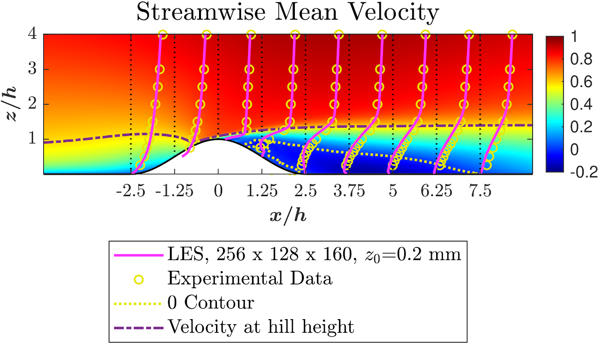
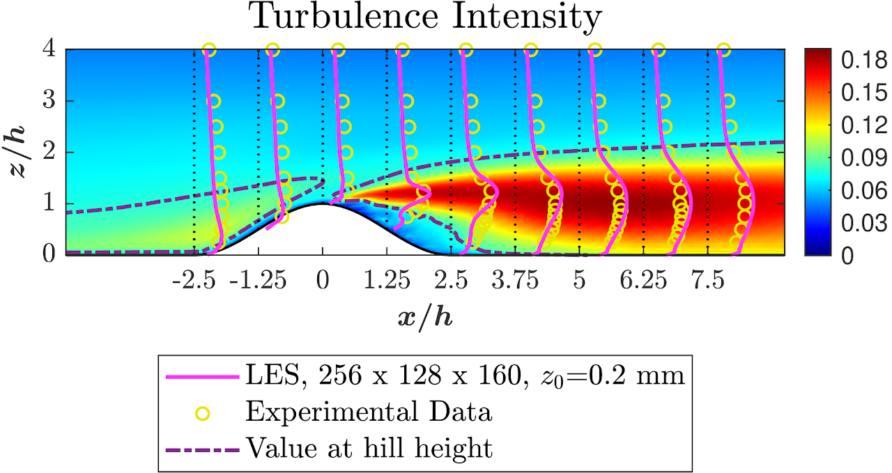
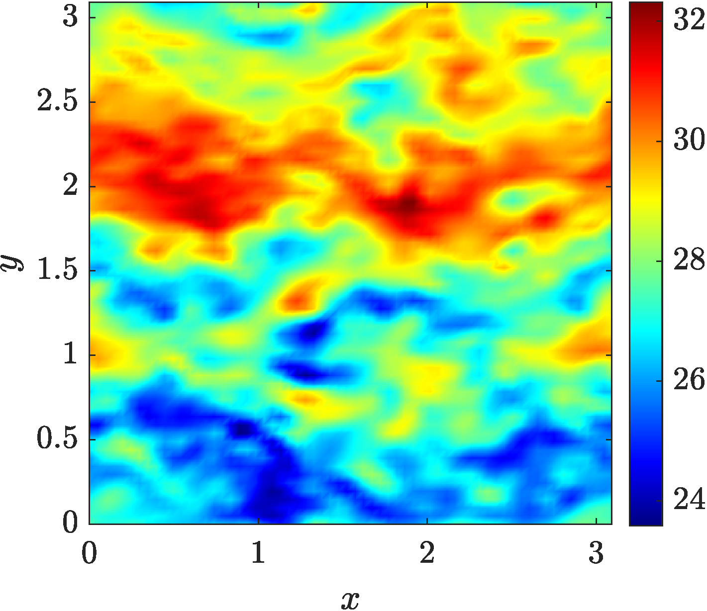
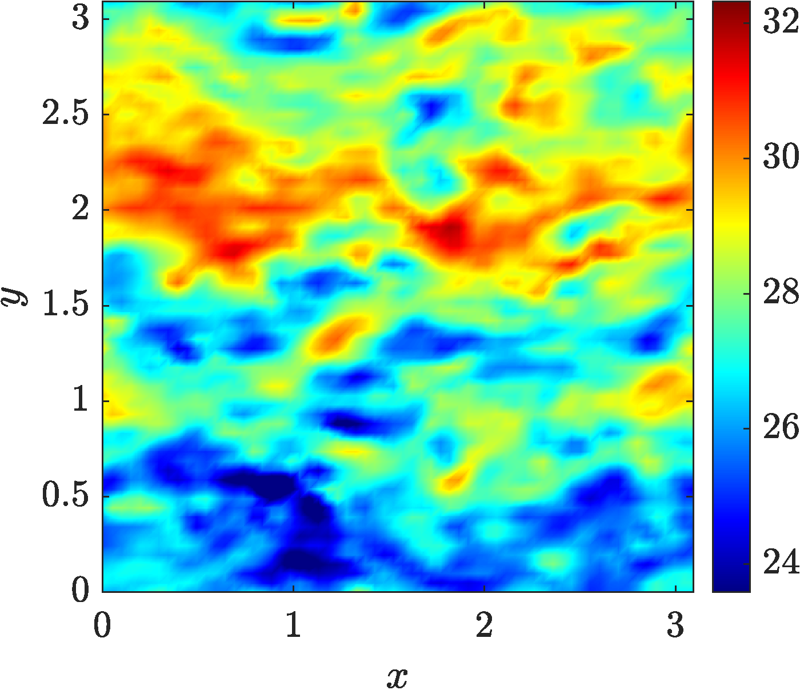
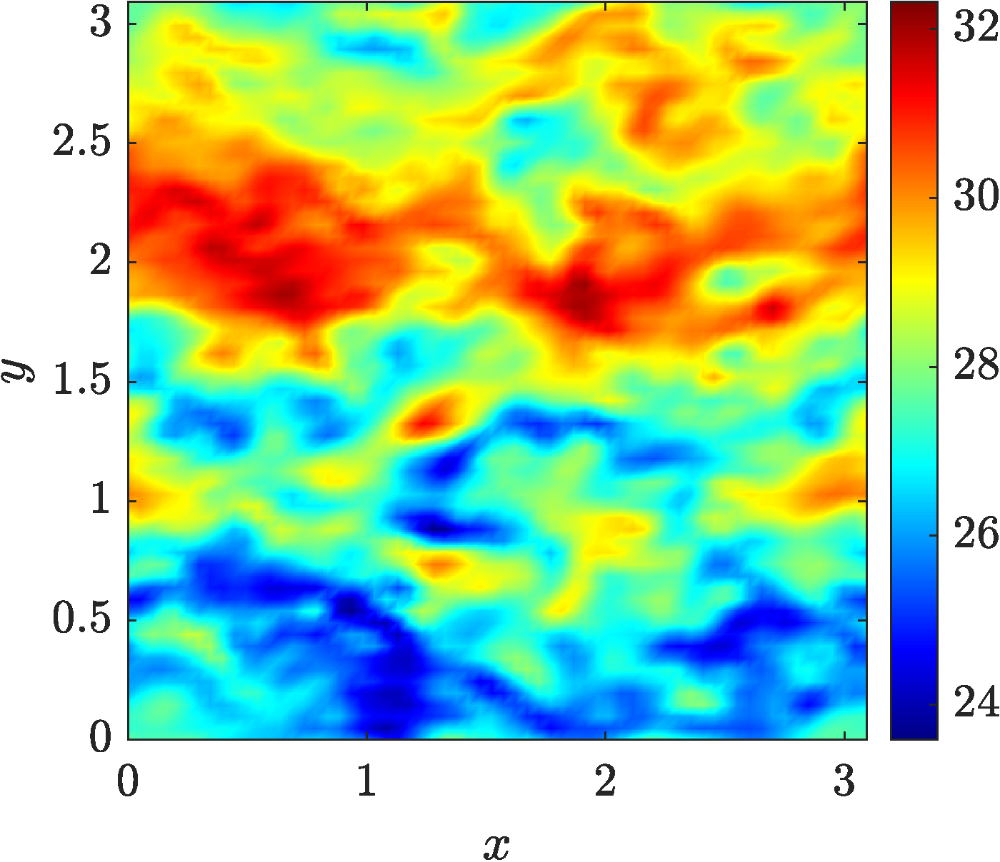
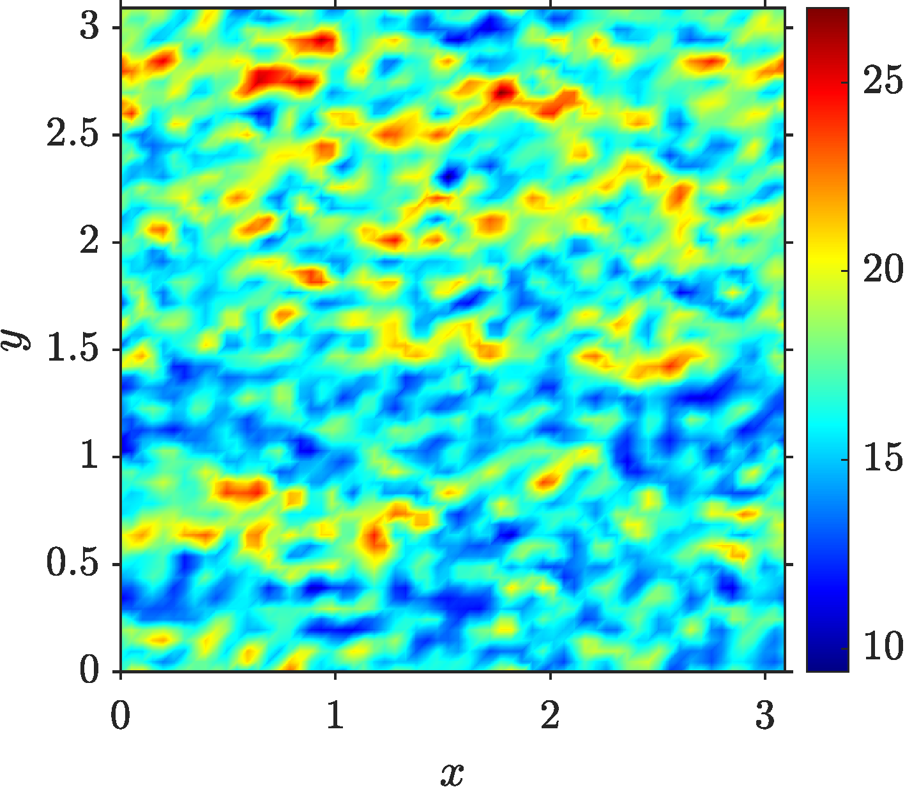
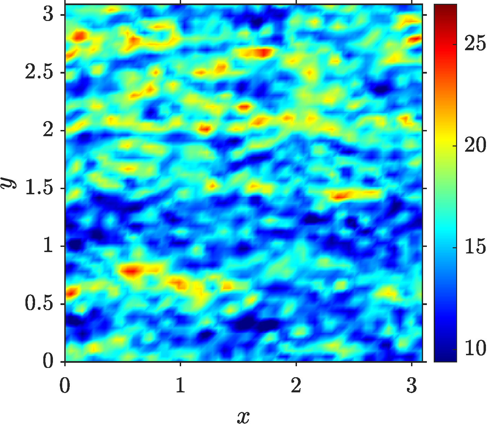
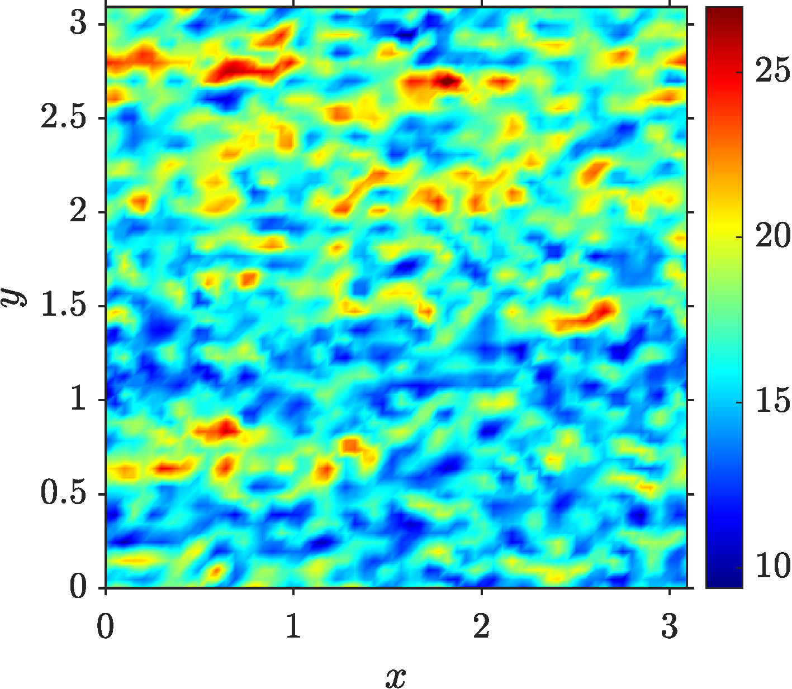
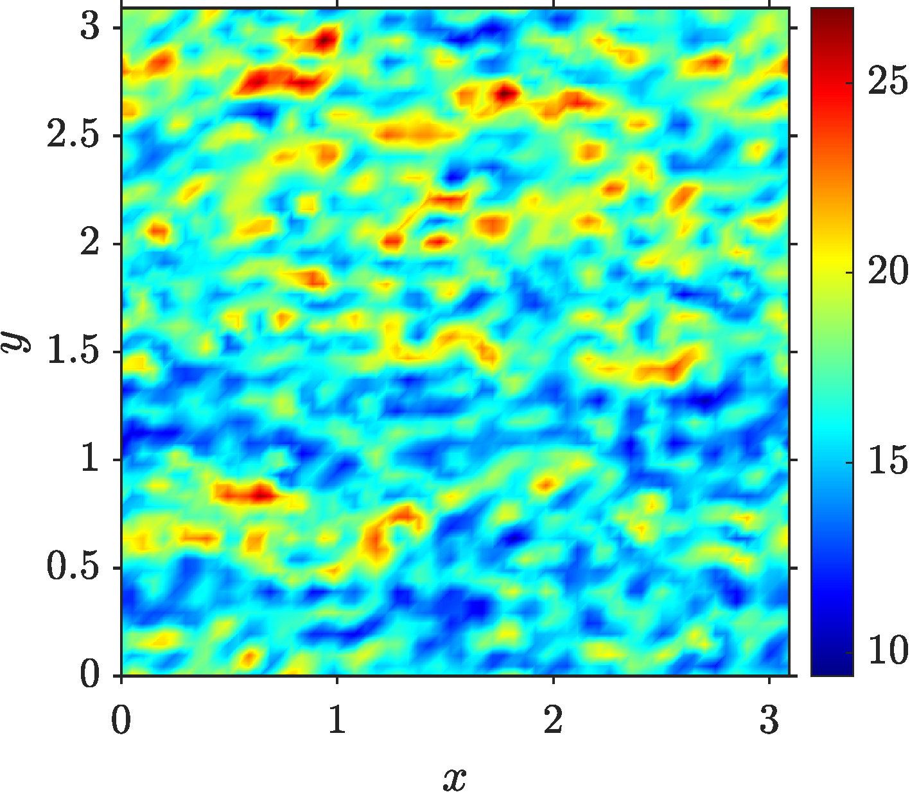

Publications
- Patel, J.A., Maity, A. and Ghaisas, N.S., 2024. A coupled immersed boundary method and wall modelling framework for high-Reynolds number flows over complex terrain. Computers & Fluids, 285, p.106457.
- Patel, J.A., Maity, A. and Ghaisas, N.S., 2024, June. The Influence of Topographical Variations on Wind Turbine Wake Characteristics Using LES. In Journal of Physics: Conference Series (Vol. 2767, No. 9, p. 092086). IOP Publishing.
- Ghaisas, N.S., Kethavath, N.N., Patel, J.A. and Mondal, K., 2025. Wake models. In Optimization, Uncertainty and Machine Learning in Wind Energy Conversion Systems (pp. 61-77). Singapore: Springer Nature Singapore.
- Maity, A., Patel, J.A. and Ghaisas, N.S. Large Eddy Simulation of the Flow Over Two-Dimensional Smooth Hills with Increasing Slopes. In Conference on Fluid Mechanics and Fluid Power (pp. 267-277).
Ph.D. Research
Large Eddy Simulation Studies of Wind Turbine Wakes in Complex Terrain
Advisor: Dr. Niranjan S. Ghaisas (Google Scholar), Department of Mechanical and Aerospace Engineering, Indian Institute of Technology, Hyderabad.
Scope of research
1. Develop a numerical tool enabling simulations of the atmospheric boundary layer and wind farms over complex terrain.
2. Understand the turbulence in wind farms as a function of the changes in elevation and roughness properties of the bottom boundary.
3. Develop analytical models for predicting the mean wind speed and power generated by a wind farm sited on non-flat, heterogeneous terrain.


Machine Learning for CFD
Alongside classical large-eddy simulation, I work on machine-learning surrogate models for turbulent flows. The figures below compare instantaneous streamwise velocity fields predicted by neural models against LES after long rollouts, at mid-height and near-surface planes.
Mid-height plane
Instantaneous streamwise velocity at mid-height after 50 rollout steps. The top-left panel is the LES reference; the other panels are predictions from different neural models, with the bottom-right being the physics-incorporated model, which is visually closest to LES.



Near-surface plane
Near-surface streamwise velocity after 50 rollout steps, in the same arrangement: LES at the top-left, neural models in the other panels, and the physics-incorporated model at the bottom-right giving the closest near-surface agreement.




Simulation Gallery
A few of my large-eddy simulations in motion.
M.Tech. Project
Understanding Physics of 2D Incompressible MHD Flow by Simulating Orszag-Tang Vortex with a New De-aliasing Scheme.
Guide: Late Dr. Sathyanarayana Ayyalasomayajula.
B.E. Project
Experimental and Numerical Analysis of Different Types of Fins for Heat Transfer Enhancements.
Guide: Dr. Digant S. Mehta.